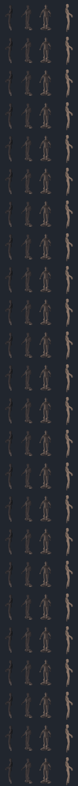
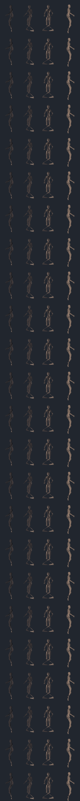

UnderGrind — Animation Inspection
Generato UTC: 2026-11-24T12:18:18.5426600Z · Unity 6000.6.9f1
Ogni contact sheet contiene 4 viste per riga: frontale, tre quarti, laterale, posteriore. Le righe seguono i tempi indicati sotto ogni immagine.
Originale assegnata — Scene — Male
Asset: Assets/UnderGrind/Animations/Crouch_Walk_Forward.fbx
Campioni: 231 · Curve: 130 · Incroci anatomici dinamici: piedi 10 / ginocchia 0
Separazione firmata minima: piedi -0.1188 m a 7.333 s · ginocchia 0.0679 m a 7.333 s
Asse anatomico iniziale (locale): (-0.9999, 0.0136, 0.0097) · soglia incrocio: 0.020 m
Confronto asse statico: piedi min -0.3093 m / 51 campioni · ginocchia min -0.0752 m / 10 campioni
Rest separation: piedi 0.3106 m · ginocchia 0.2233 m · loop piedi rispetto alle anche 0.0000 m / 0.00° · deriva world ossa 0.0001 m

Colonne: Frontale · Tre quarti · Laterale · Posteriore
Tempi righe: 0.000 s · 0.319 s · 0.639 s · 0.958 s · 1.278 s · 1.597 s · 1.917 s · 2.236 s · 2.556 s · 2.875 s · 3.194 s · 3.514 s · 3.833 s · 4.153 s · 4.472 s · 4.792 s · 5.111 s · 5.431 s · 5.750 s · 6.069 s · 6.389 s · 6.708 s · 7.028 s · 7.347 s
Traiettoria piedi: L 7.770 m / R 7.493 m · Velocità max: L 3.642 / R 3.623 m/s
Contatto stimato: L 19.9% / R 16.0% · Deriva bacino max: 0.1514 m · Inclinazione busto max: 16.0°
Report JSON · Pose Humanoid CSV · Hierarchy Transform CSV · Curve CSV
· Geometry CSV
Crouch_Walk_Candidate_01 — Male
Asset: Assets/UnderGrind/Animations/Candidates/PINOC_CrouchWalk/Crouch_Walk_Candidate_01.fbx
Campioni: 240 · Curve: 260 · Incroci anatomici dinamici: piedi 233 / ginocchia 0
Separazione firmata minima: piedi -0.4263 m a 0.533 s · ginocchia -0.0141 m a 0.533 s
Asse anatomico iniziale (locale): (-0.9927, -0.1163, -0.0325) · soglia incrocio: 0.020 m
Confronto asse statico: piedi min -0.5225 m / 233 campioni · ginocchia min -0.0659 m / 12 campioni
Rest separation: piedi 0.2313 m · ginocchia 0.2629 m · loop piedi rispetto alle anche 0.0091 m / 55.28° · deriva world ossa 0.3940 m

Colonne: Frontale · Tre quarti · Laterale · Posteriore
Tempi righe: 0.000 s · 0.332 s · 0.664 s · 0.996 s · 1.328 s · 1.660 s · 1.992 s · 2.324 s · 2.656 s · 2.988 s · 3.319 s · 3.651 s · 3.983 s · 4.315 s · 4.647 s · 4.979 s · 5.311 s · 5.643 s · 5.975 s · 6.307 s · 6.639 s · 6.971 s · 7.303 s · 7.635 s
Traiettoria piedi: L 1.359 m / R 0.671 m · Velocità max: L 2.865 / R 2.011 m/s
Contatto stimato: L 87.1% / R 0.0% · Deriva bacino max: 0.0750 m · Inclinazione busto max: 16.8°
Report JSON · Pose Humanoid CSV · Hierarchy Transform CSV · Curve CSV
· Geometry CSV
Crouch_Walk_Candidate_02 — Male
Asset: Assets/UnderGrind/Animations/Candidates/PINOC_CrouchWalk/Crouch_Walk_Candidate_02.fbx
Campioni: 240 · Curve: 260 · Incroci anatomici dinamici: piedi 0 / ginocchia 0
Separazione firmata minima: piedi 0.0014 m a 7.967 s · ginocchia 0.1518 m a 0.933 s
Asse anatomico iniziale (locale): (-0.9717, 0.0409, -0.2327) · soglia incrocio: 0.020 m
Confronto asse statico: piedi min -0.1026 m / 16 campioni · ginocchia min 0.1306 m / 0 campioni
Rest separation: piedi 0.0910 m · ginocchia 0.1573 m · loop piedi rispetto alle anche 0.0022 m / 24.88° · deriva world ossa 0.3007 m

Colonne: Frontale · Tre quarti · Laterale · Posteriore
Tempi righe: 0.000 s · 0.332 s · 0.664 s · 0.996 s · 1.328 s · 1.660 s · 1.992 s · 2.324 s · 2.656 s · 2.988 s · 3.319 s · 3.651 s · 3.983 s · 4.315 s · 4.647 s · 4.979 s · 5.311 s · 5.643 s · 5.975 s · 6.307 s · 6.639 s · 6.971 s · 7.303 s · 7.635 s
Traiettoria piedi: L 1.279 m / R 1.077 m · Velocità max: L 2.510 / R 3.299 m/s
Contatto stimato: L 0.0% / R 0.0% · Deriva bacino max: 0.0994 m · Inclinazione busto max: 36.1°
Report JSON · Pose Humanoid CSV · Hierarchy Transform CSV · Curve CSV
· Geometry CSV
Crouch_Walk_Candidate_03 — Male
Asset: Assets/UnderGrind/Animations/Candidates/PINOC_CrouchWalk/Crouch_Walk_Candidate_03.fbx
Campioni: 240 · Curve: 260 · Incroci anatomici dinamici: piedi 22 / ginocchia 0
Separazione firmata minima: piedi -0.3091 m a 0.433 s · ginocchia 0.1150 m a 0.367 s
Asse anatomico iniziale (locale): (-0.9993, 0.0383, -0.0040) · soglia incrocio: 0.020 m
Confronto asse statico: piedi min -0.3504 m / 22 campioni · ginocchia min 0.1050 m / 0 campioni
Rest separation: piedi 0.1930 m · ginocchia 0.2876 m · loop piedi rispetto alle anche 0.0058 m / 20.32° · deriva world ossa 0.3207 m

Colonne: Frontale · Tre quarti · Laterale · Posteriore
Tempi righe: 0.000 s · 0.332 s · 0.664 s · 0.996 s · 1.328 s · 1.660 s · 1.992 s · 2.324 s · 2.656 s · 2.988 s · 3.319 s · 3.651 s · 3.983 s · 4.315 s · 4.647 s · 4.979 s · 5.311 s · 5.643 s · 5.975 s · 6.307 s · 6.639 s · 6.971 s · 7.303 s · 7.635 s
Traiettoria piedi: L 1.099 m / R 0.969 m · Velocità max: L 2.642 / R 2.797 m/s
Contatto stimato: L 87.5% / R 87.5% · Deriva bacino max: 0.0618 m · Inclinazione busto max: 26.4°
Report JSON · Pose Humanoid CSV · Hierarchy Transform CSV · Curve CSV
· Geometry CSV
Crouch_Walk_Candidate_04 — Male
Asset: Assets/UnderGrind/Animations/Candidates/PINOC_CrouchWalk/Crouch_Walk_Candidate_04.fbx
Campioni: 240 · Curve: 260 · Incroci anatomici dinamici: piedi 0 / ginocchia 0
Separazione firmata minima: piedi 0.0422 m a 7.967 s · ginocchia 0.2592 m a 7.967 s
Asse anatomico iniziale (locale): (-0.9840, -0.1001, -0.1473) · soglia incrocio: 0.020 m
Confronto asse statico: piedi min 0.0216 m / 0 campioni · ginocchia min 0.2432 m / 0 campioni
Rest separation: piedi 0.1086 m · ginocchia 0.3813 m · loop piedi rispetto alle anche 0.0073 m / 31.51° · deriva world ossa 0.3596 m

Colonne: Frontale · Tre quarti · Laterale · Posteriore
Tempi righe: 0.000 s · 0.332 s · 0.664 s · 0.996 s · 1.328 s · 1.660 s · 1.992 s · 2.324 s · 2.656 s · 2.988 s · 3.319 s · 3.651 s · 3.983 s · 4.315 s · 4.647 s · 4.979 s · 5.311 s · 5.643 s · 5.975 s · 6.307 s · 6.639 s · 6.971 s · 7.303 s · 7.635 s
Traiettoria piedi: L 0.797 m / R 0.964 m · Velocità max: L 2.851 / R 2.236 m/s
Contatto stimato: L 87.1% / R 87.1% · Deriva bacino max: 0.0623 m · Inclinazione busto max: 23.9°
Report JSON · Pose Humanoid CSV · Hierarchy Transform CSV · Curve CSV
· Geometry CSV
Crouch_Walk_Candidate_05 — Male
Asset: Assets/UnderGrind/Animations/Candidates/PINOC_CrouchWalk/Crouch_Walk_Candidate_05.fbx
Campioni: 180 · Curve: 260 · Incroci anatomici dinamici: piedi 0 / ginocchia 0
Separazione firmata minima: piedi 0.1284 m a 0.200 s · ginocchia 0.1266 m a 0.000 s
Asse anatomico iniziale (locale): (-0.9893, 0.0283, 0.1431) · soglia incrocio: 0.020 m
Confronto asse statico: piedi min 0.1288 m / 0 campioni · ginocchia min 0.1266 m / 0 campioni
Rest separation: piedi 0.1392 m · ginocchia 0.1266 m · loop piedi rispetto alle anche 0.0082 m / 15.17° · deriva world ossa 0.3020 m

Colonne: Frontale · Tre quarti · Laterale · Posteriore
Tempi righe: 0.000 s · 0.249 s · 0.497 s · 0.746 s · 0.994 s · 1.243 s · 1.492 s · 1.740 s · 1.989 s · 2.238 s · 2.486 s · 2.735 s · 2.983 s · 3.232 s · 3.481 s · 3.729 s · 3.978 s · 4.226 s · 4.475 s · 4.724 s · 4.972 s · 5.221 s · 5.469 s · 5.718 s
Traiettoria piedi: L 0.327 m / R 0.312 m · Velocità max: L 0.544 / R 0.531 m/s
Contatto stimato: L 0.6% / R 3.3% · Deriva bacino max: 0.1517 m · Inclinazione busto max: 19.1°
Report JSON · Pose Humanoid CSV · Hierarchy Transform CSV · Curve CSV
· Geometry CSV
Crouch_Walk_Candidate_06 — Male
Asset: Assets/UnderGrind/Animations/Candidates/PINOC_CrouchWalk/Crouch_Walk_Candidate_06.fbx
Campioni: 180 · Curve: 260 · Incroci anatomici dinamici: piedi 0 / ginocchia 0
Separazione firmata minima: piedi 0.1306 m a 0.767 s · ginocchia 0.1483 m a 0.767 s
Asse anatomico iniziale (locale): (-0.9956, 0.0335, -0.0879) · soglia incrocio: 0.020 m
Confronto asse statico: piedi min 0.1323 m / 0 campioni · ginocchia min 0.1477 m / 0 campioni
Rest separation: piedi 0.2517 m · ginocchia 0.1797 m · loop piedi rispetto alle anche 0.0071 m / 13.34° · deriva world ossa 0.2915 m

Colonne: Frontale · Tre quarti · Laterale · Posteriore
Tempi righe: 0.000 s · 0.249 s · 0.497 s · 0.746 s · 0.994 s · 1.243 s · 1.492 s · 1.740 s · 1.989 s · 2.238 s · 2.486 s · 2.735 s · 2.983 s · 3.232 s · 3.481 s · 3.729 s · 3.978 s · 4.226 s · 4.475 s · 4.724 s · 4.972 s · 5.221 s · 5.469 s · 5.718 s
Traiettoria piedi: L 0.312 m / R 0.348 m · Velocità max: L 0.682 / R 0.529 m/s
Contatto stimato: L 2.2% / R 0.6% · Deriva bacino max: 0.1472 m · Inclinazione busto max: 18.0°
Report JSON · Pose Humanoid CSV · Hierarchy Transform CSV · Curve CSV
· Geometry CSV
Crouch_Walk_Candidate_07 — Male
Asset: Assets/UnderGrind/Animations/Candidates/PINOC_CrouchWalk/Crouch_Walk_Candidate_07.fbx
Campioni: 180 · Curve: 260 · Incroci anatomici dinamici: piedi 0 / ginocchia 0
Separazione firmata minima: piedi 0.1086 m a 0.867 s · ginocchia 0.1878 m a 0.233 s
Asse anatomico iniziale (locale): (-0.9910, -0.1084, -0.0784) · soglia incrocio: 0.020 m
Confronto asse statico: piedi min 0.1059 m / 0 campioni · ginocchia min 0.1876 m / 0 campioni
Rest separation: piedi 0.3136 m · ginocchia 0.2513 m · loop piedi rispetto alle anche 0.0112 m / 22.96° · deriva world ossa 0.4639 m

Colonne: Frontale · Tre quarti · Laterale · Posteriore
Tempi righe: 0.000 s · 0.249 s · 0.497 s · 0.746 s · 0.994 s · 1.243 s · 1.492 s · 1.740 s · 1.989 s · 2.238 s · 2.486 s · 2.735 s · 2.983 s · 3.232 s · 3.481 s · 3.729 s · 3.978 s · 4.226 s · 4.475 s · 4.724 s · 4.972 s · 5.221 s · 5.469 s · 5.718 s
Traiettoria piedi: L 0.504 m / R 0.495 m · Velocità max: L 0.805 / R 0.773 m/s
Contatto stimato: L 0.6% / R 0.6% · Deriva bacino max: 0.1035 m · Inclinazione busto max: 19.1°
Report JSON · Pose Humanoid CSV · Hierarchy Transform CSV · Curve CSV
· Geometry CSV
Crouch_Walk_Candidate_08 — Male
Asset: Assets/UnderGrind/Animations/Candidates/PINOC_CrouchWalk/Crouch_Walk_Candidate_08.fbx
Campioni: 180 · Curve: 260 · Incroci anatomici dinamici: piedi 0 / ginocchia 0
Separazione firmata minima: piedi 0.2422 m a 5.967 s · ginocchia 0.2010 m a 0.267 s
Asse anatomico iniziale (locale): (-0.9867, -0.0454, -0.1560) · soglia incrocio: 0.020 m
Confronto asse statico: piedi min 0.2451 m / 0 campioni · ginocchia min 0.2024 m / 0 campioni
Rest separation: piedi 0.3168 m · ginocchia 0.2144 m · loop piedi rispetto alle anche 0.0086 m / 15.29° · deriva world ossa 0.3327 m

Colonne: Frontale · Tre quarti · Laterale · Posteriore
Tempi righe: 0.000 s · 0.249 s · 0.497 s · 0.746 s · 0.994 s · 1.243 s · 1.492 s · 1.740 s · 1.989 s · 2.238 s · 2.486 s · 2.735 s · 2.983 s · 3.232 s · 3.481 s · 3.729 s · 3.978 s · 4.226 s · 4.475 s · 4.724 s · 4.972 s · 5.221 s · 5.469 s · 5.718 s
Traiettoria piedi: L 0.348 m / R 0.333 m · Velocità max: L 0.708 / R 0.620 m/s
Contatto stimato: L 5.0% / R 3.9% · Deriva bacino max: 0.1571 m · Inclinazione busto max: 14.4°
Report JSON · Pose Humanoid CSV · Hierarchy Transform CSV · Curve CSV
· Geometry CSV
Originale assegnata — Scene — Female
Asset: Assets/UnderGrind/Animations/Crouch_Walk_Forward.fbx
Campioni: 231 · Curve: 130 · Incroci anatomici dinamici: piedi 12 / ginocchia 0
Separazione firmata minima: piedi -0.1333 m a 7.333 s · ginocchia 0.0450 m a 7.333 s
Asse anatomico iniziale (locale): (-0.9999, 0.0136, 0.0097) · soglia incrocio: 0.020 m
Confronto asse statico: piedi min -0.3137 m / 54 campioni · ginocchia min -0.0898 m / 14 campioni
Rest separation: piedi 0.2769 m · ginocchia 0.1935 m · loop piedi rispetto alle anche 0.0000 m / 0.00° · deriva world ossa 0.0001 m

Colonne: Frontale · Tre quarti · Laterale · Posteriore
Tempi righe: 0.000 s · 0.319 s · 0.639 s · 0.958 s · 1.278 s · 1.597 s · 1.917 s · 2.236 s · 2.556 s · 2.875 s · 3.194 s · 3.514 s · 3.833 s · 4.153 s · 4.472 s · 4.792 s · 5.111 s · 5.431 s · 5.750 s · 6.069 s · 6.389 s · 6.708 s · 7.028 s · 7.347 s
Traiettoria piedi: L 7.451 m / R 7.193 m · Velocità max: L 3.496 / R 3.468 m/s
Contatto stimato: L 19.9% / R 16.0% · Deriva bacino max: 0.1449 m · Inclinazione busto max: 16.3°
Report JSON · Pose Humanoid CSV · Hierarchy Transform CSV · Curve CSV
· Geometry CSV
Crouch_Walk_Candidate_01 — Female
Asset: Assets/UnderGrind/Animations/Candidates/PINOC_CrouchWalk/Crouch_Walk_Candidate_01.fbx
Campioni: 240 · Curve: 260 · Incroci anatomici dinamici: piedi 233 / ginocchia 7
Separazione firmata minima: piedi -0.4280 m a 0.533 s · ginocchia -0.0331 m a 0.533 s
Asse anatomico iniziale (locale): (-0.9927, -0.1164, -0.0323) · soglia incrocio: 0.020 m
Confronto asse statico: piedi min -0.5187 m / 233 campioni · ginocchia min -0.0819 m / 14 campioni
Rest separation: piedi 0.1995 m · ginocchia 0.2315 m · loop piedi rispetto alle anche 0.0086 m / 55.18° · deriva world ossa 0.3782 m

Colonne: Frontale · Tre quarti · Laterale · Posteriore
Tempi righe: 0.000 s · 0.332 s · 0.664 s · 0.996 s · 1.328 s · 1.660 s · 1.992 s · 2.324 s · 2.656 s · 2.988 s · 3.319 s · 3.651 s · 3.983 s · 4.315 s · 4.647 s · 4.979 s · 5.311 s · 5.643 s · 5.975 s · 6.307 s · 6.639 s · 6.971 s · 7.303 s · 7.635 s
Traiettoria piedi: L 1.305 m / R 0.644 m · Velocità max: L 2.752 / R 1.937 m/s
Contatto stimato: L 87.1% / R 0.0% · Deriva bacino max: 0.0715 m · Inclinazione busto max: 17.3°
Report JSON · Pose Humanoid CSV · Hierarchy Transform CSV · Curve CSV
· Geometry CSV
Crouch_Walk_Candidate_02 — Female
Asset: Assets/UnderGrind/Animations/Candidates/PINOC_CrouchWalk/Crouch_Walk_Candidate_02.fbx
Campioni: 240 · Curve: 260 · Incroci anatomici dinamici: piedi 210 / ginocchia 0
Separazione firmata minima: piedi -0.0202 m a 7.967 s · ginocchia 0.1254 m a 0.933 s
Asse anatomico iniziale (locale): (-0.9717, 0.0408, -0.2329) · soglia incrocio: 0.020 m
Confronto asse statico: piedi min -0.1190 m / 18 campioni · ginocchia min 0.1053 m / 0 campioni
Rest separation: piedi 0.0652 m · ginocchia 0.1307 m · loop piedi rispetto alle anche 0.0020 m / 24.85° · deriva world ossa 0.2890 m

Colonne: Frontale · Tre quarti · Laterale · Posteriore
Tempi righe: 0.000 s · 0.332 s · 0.664 s · 0.996 s · 1.328 s · 1.660 s · 1.992 s · 2.324 s · 2.656 s · 2.988 s · 3.319 s · 3.651 s · 3.983 s · 4.315 s · 4.647 s · 4.979 s · 5.311 s · 5.643 s · 5.975 s · 6.307 s · 6.639 s · 6.971 s · 7.303 s · 7.635 s
Traiettoria piedi: L 1.228 m / R 1.039 m · Velocità max: L 2.412 / R 3.175 m/s
Contatto stimato: L 0.0% / R 0.0% · Deriva bacino max: 0.0938 m · Inclinazione busto max: 36.0°
Report JSON · Pose Humanoid CSV · Hierarchy Transform CSV · Curve CSV
· Geometry CSV
Crouch_Walk_Candidate_03 — Female
Asset: Assets/UnderGrind/Animations/Candidates/PINOC_CrouchWalk/Crouch_Walk_Candidate_03.fbx
Campioni: 240 · Curve: 260 · Incroci anatomici dinamici: piedi 22 / ginocchia 0
Separazione firmata minima: piedi -0.3162 m a 0.433 s · ginocchia 0.0902 m a 0.367 s
Asse anatomico iniziale (locale): (-0.9993, 0.0383, -0.0039) · soglia incrocio: 0.020 m
Confronto asse statico: piedi min -0.3555 m / 22 campioni · ginocchia min 0.0808 m / 0 campioni
Rest separation: piedi 0.1626 m · ginocchia 0.2552 m · loop piedi rispetto alle anche 0.0055 m / 20.35° · deriva world ossa 0.3085 m

Colonne: Frontale · Tre quarti · Laterale · Posteriore
Tempi righe: 0.000 s · 0.332 s · 0.664 s · 0.996 s · 1.328 s · 1.660 s · 1.992 s · 2.324 s · 2.656 s · 2.988 s · 3.319 s · 3.651 s · 3.983 s · 4.315 s · 4.647 s · 4.979 s · 5.311 s · 5.643 s · 5.975 s · 6.307 s · 6.639 s · 6.971 s · 7.303 s · 7.635 s
Traiettoria piedi: L 1.058 m / R 0.932 m · Velocità max: L 2.541 / R 2.690 m/s
Contatto stimato: L 87.5% / R 87.5% · Deriva bacino max: 0.0589 m · Inclinazione busto max: 26.9°
Report JSON · Pose Humanoid CSV · Hierarchy Transform CSV · Curve CSV
· Geometry CSV
Crouch_Walk_Candidate_04 — Female
Asset: Assets/UnderGrind/Animations/Candidates/PINOC_CrouchWalk/Crouch_Walk_Candidate_04.fbx
Campioni: 240 · Curve: 260 · Incroci anatomici dinamici: piedi 0 / ginocchia 0
Separazione firmata minima: piedi 0.0189 m a 7.967 s · ginocchia 0.2280 m a 7.967 s
Asse anatomico iniziale (locale): (-0.9840, -0.0998, -0.1477) · soglia incrocio: 0.020 m
Confronto asse statico: piedi min -0.0006 m / 0 campioni · ginocchia min 0.2130 m / 0 campioni
Rest separation: piedi 0.0820 m · ginocchia 0.3448 m · loop piedi rispetto alle anche 0.0069 m / 31.45° · deriva world ossa 0.3468 m

Colonne: Frontale · Tre quarti · Laterale · Posteriore
Tempi righe: 0.000 s · 0.332 s · 0.664 s · 0.996 s · 1.328 s · 1.660 s · 1.992 s · 2.324 s · 2.656 s · 2.988 s · 3.319 s · 3.651 s · 3.983 s · 4.315 s · 4.647 s · 4.979 s · 5.311 s · 5.643 s · 5.975 s · 6.307 s · 6.639 s · 6.971 s · 7.303 s · 7.635 s
Traiettoria piedi: L 0.767 m / R 0.928 m · Velocità max: L 2.740 / R 2.147 m/s
Contatto stimato: L 87.1% / R 87.1% · Deriva bacino max: 0.0593 m · Inclinazione busto max: 24.0°
Report JSON · Pose Humanoid CSV · Hierarchy Transform CSV · Curve CSV
· Geometry CSV
Crouch_Walk_Candidate_05 — Female
Asset: Assets/UnderGrind/Animations/Candidates/PINOC_CrouchWalk/Crouch_Walk_Candidate_05.fbx
Campioni: 180 · Curve: 260 · Incroci anatomici dinamici: piedi 0 / ginocchia 0
Separazione firmata minima: piedi 0.1020 m a 0.200 s · ginocchia 0.1008 m a 0.000 s
Asse anatomico iniziale (locale): (-0.9895, 0.0269, 0.1422) · soglia incrocio: 0.020 m
Confronto asse statico: piedi min 0.1024 m / 0 campioni · ginocchia min 0.1008 m / 0 campioni
Rest separation: piedi 0.1126 m · ginocchia 0.1008 m · loop piedi rispetto alle anche 0.0077 m / 15.06° · deriva world ossa 0.2908 m

Colonne: Frontale · Tre quarti · Laterale · Posteriore
Tempi righe: 0.000 s · 0.249 s · 0.497 s · 0.746 s · 0.994 s · 1.243 s · 1.492 s · 1.740 s · 1.989 s · 2.238 s · 2.486 s · 2.735 s · 2.983 s · 3.232 s · 3.481 s · 3.729 s · 3.978 s · 4.226 s · 4.475 s · 4.724 s · 4.972 s · 5.221 s · 5.469 s · 5.718 s
Traiettoria piedi: L 0.317 m / R 0.300 m · Velocità max: L 0.530 / R 0.514 m/s
Contatto stimato: L 0.6% / R 3.3% · Deriva bacino max: 0.1458 m · Inclinazione busto max: 20.3°
Report JSON · Pose Humanoid CSV · Hierarchy Transform CSV · Curve CSV
· Geometry CSV
Crouch_Walk_Candidate_06 — Female
Asset: Assets/UnderGrind/Animations/Candidates/PINOC_CrouchWalk/Crouch_Walk_Candidate_06.fbx
Campioni: 180 · Curve: 260 · Incroci anatomici dinamici: piedi 0 / ginocchia 0
Separazione firmata minima: piedi 0.1028 m a 0.767 s · ginocchia 0.1220 m a 0.767 s
Asse anatomico iniziale (locale): (-0.9956, 0.0340, -0.0878) · soglia incrocio: 0.020 m
Confronto asse statico: piedi min 0.1044 m / 0 campioni · ginocchia min 0.1215 m / 0 campioni
Rest separation: piedi 0.2201 m · ginocchia 0.1516 m · loop piedi rispetto alle anche 0.0067 m / 13.19° · deriva world ossa 0.2822 m

Colonne: Frontale · Tre quarti · Laterale · Posteriore
Tempi righe: 0.000 s · 0.249 s · 0.497 s · 0.746 s · 0.994 s · 1.243 s · 1.492 s · 1.740 s · 1.989 s · 2.238 s · 2.486 s · 2.735 s · 2.983 s · 3.232 s · 3.481 s · 3.729 s · 3.978 s · 4.226 s · 4.475 s · 4.724 s · 4.972 s · 5.221 s · 5.469 s · 5.718 s
Traiettoria piedi: L 0.301 m / R 0.337 m · Velocità max: L 0.657 / R 0.508 m/s
Contatto stimato: L 2.8% / R 0.6% · Deriva bacino max: 0.1414 m · Inclinazione busto max: 18.9°
Report JSON · Pose Humanoid CSV · Hierarchy Transform CSV · Curve CSV
· Geometry CSV
Crouch_Walk_Candidate_07 — Female
Asset: Assets/UnderGrind/Animations/Candidates/PINOC_CrouchWalk/Crouch_Walk_Candidate_07.fbx
Campioni: 180 · Curve: 260 · Incroci anatomici dinamici: piedi 0 / ginocchia 0
Separazione firmata minima: piedi 0.0828 m a 0.867 s · ginocchia 0.1595 m a 0.233 s
Asse anatomico iniziale (locale): (-0.9910, -0.1071, -0.0801) · soglia incrocio: 0.020 m
Confronto asse statico: piedi min 0.0806 m / 0 campioni · ginocchia min 0.1592 m / 0 campioni
Rest separation: piedi 0.2786 m · ginocchia 0.2199 m · loop piedi rispetto alle anche 0.0106 m / 22.98° · deriva world ossa 0.4477 m

Colonne: Frontale · Tre quarti · Laterale · Posteriore
Tempi righe: 0.000 s · 0.249 s · 0.497 s · 0.746 s · 0.994 s · 1.243 s · 1.492 s · 1.740 s · 1.989 s · 2.238 s · 2.486 s · 2.735 s · 2.983 s · 3.232 s · 3.481 s · 3.729 s · 3.978 s · 4.226 s · 4.475 s · 4.724 s · 4.972 s · 5.221 s · 5.469 s · 5.718 s
Traiettoria piedi: L 0.485 m / R 0.479 m · Velocità max: L 0.778 / R 0.744 m/s
Contatto stimato: L 0.6% / R 0.6% · Deriva bacino max: 0.0987 m · Inclinazione busto max: 20.2°
Report JSON · Pose Humanoid CSV · Hierarchy Transform CSV · Curve CSV
· Geometry CSV
Crouch_Walk_Candidate_08 — Female
Asset: Assets/UnderGrind/Animations/Candidates/PINOC_CrouchWalk/Crouch_Walk_Candidate_08.fbx
Campioni: 180 · Curve: 260 · Incroci anatomici dinamici: piedi 0 / ginocchia 0
Separazione firmata minima: piedi 0.2095 m a 5.967 s · ginocchia 0.1718 m a 0.267 s
Asse anatomico iniziale (locale): (-0.9868, -0.0433, -0.1558) · soglia incrocio: 0.020 m
Confronto asse statico: piedi min 0.2124 m / 0 campioni · ginocchia min 0.1732 m / 0 campioni
Rest separation: piedi 0.2825 m · ginocchia 0.1848 m · loop piedi rispetto alle anche 0.0081 m / 15.23° · deriva world ossa 0.3208 m

Colonne: Frontale · Tre quarti · Laterale · Posteriore
Tempi righe: 0.000 s · 0.249 s · 0.497 s · 0.746 s · 0.994 s · 1.243 s · 1.492 s · 1.740 s · 1.989 s · 2.238 s · 2.486 s · 2.735 s · 2.983 s · 3.232 s · 3.481 s · 3.729 s · 3.978 s · 4.226 s · 4.475 s · 4.724 s · 4.972 s · 5.221 s · 5.469 s · 5.718 s
Traiettoria piedi: L 0.335 m / R 0.322 m · Velocità max: L 0.679 / R 0.598 m/s
Contatto stimato: L 5.0% / R 3.9% · Deriva bacino max: 0.1509 m · Inclinazione busto max: 15.2°
Report JSON · Pose Humanoid CSV · Hierarchy Transform CSV · Curve CSV
· Geometry CSV